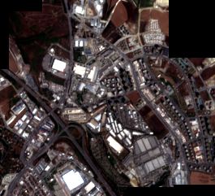

Kaynak yama
5
Mozaik boyutu
265
×
241
Geçerli piksel
%89.18
Geçerli alan
5.70 km²
En yüksek örtüşme
%66.17
Birleştirilmiş RGB görüntüsü

PNG yalnızca görsel inceleme için
hazırlanmıştır. Semantik segmentasyon
aşamasında ham piksel değerlerini ve
koordinat bilgisini koruyan GeoTIFF
kullanılacaktır.
Örtüşen uydu yamaları birbirinden bağımsız
eğitim ve doğrulama verisi değildir.
Makine öğrenmesi veri ayrımı coğrafi
gruplar üzerinden yapılmalıdır.
Yama örtüşme matrisi
Her değer, iki uydu yamasının daha küçük olan yamanın alanına göre yüzde kaç örtüştüğünü gösterir.
| ESENYURT_01 | ESENYURT_02 | ESENYURT_03 | ESENYURT_04 | ESENYURT_05 | |
|---|---|---|---|---|---|
| patch_id | |||||
| ESENYURT_01 | 100.00 | 66.17 | 28.47 | 48.07 | 32.56 |
| ESENYURT_02 | 66.17 | 100.00 | 48.93 | 41.15 | 21.78 |
| ESENYURT_03 | 28.47 | 48.93 | 100.00 | 57.11 | 25.08 |
| ESENYURT_04 | 48.07 | 41.15 | 57.11 | 100.00 | 64.69 |
| ESENYURT_05 | 32.56 | 21.78 | 25.08 | 64.69 | 100.00 |
Uydu sahnesi
Sahne kimliği:
S2B_MSIL2A_20260720T085559_R007_T35TPF_20260720T225308
Tarih: 2026-07-20T08:55:59.024000+00:00
Platform: Sentinel-2B
Koordinat sistemi: EPSG:32635
Piksel çözünürlüğü: 10.00 × 10.00 metre